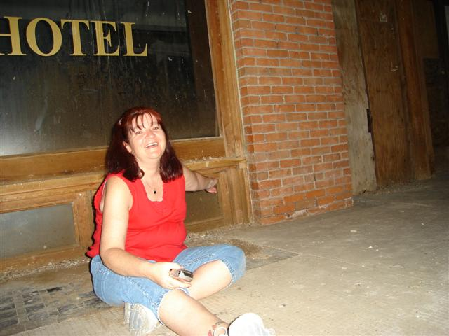

|
My name is Tina Carlson. I started seeing ghosts after a near death experience when I was 2 1/2. I actually left my body and traveled down the proverbial tunnel and was met by a woman who told me to go back. I spent the remainder of my childhood and teen years in Iowa in numerous houses all of which seemed to be haunted, actually leaving a home in the middle of the night with my parents and siblings in 1979 after seeing a ghost enter my bedroom that my parents had had experiences while occupying the room. I was married and moved to Hawaii where we were stationed. I experienced hauntings there as well, including an unhappy being crouching on a table in a military hotel. A year later, we moved back to Iowa where I again experienced ghostly visits whom I believe was a deceased boyfriend of my grandmothers who always wore slippers in life and I heard every night shuffling in our kitchen. In 1984 we moved to Texas. I lived in 2 different homes in Austin again experiencing spirits mostly spirits out of the corner of my eyes and noises accompanying the glimpses of the spirits. We moved back to Iowa 1991-92 while my husband was stationed out of the country. The house we lived in, shadows were seen frequently in the hall of the home where we lived. We were then stationed in Abilene Texas in 92-93 off base in a home that seemed to have an air of bad luck about it. We always had plumbing problems there, injuries, endless repairs of household items and vehicles. We moved to another home in Abilene where we had in infestation of bugs, ants, spiders, roaches and slugs. We found a narrow crawlspace under the home that had been boarded up. It just felt that something sinister had taken place there, although we could never find any history on the home that would lead us to feel that way. We then received orders to Las Vegas Nevada. Frequently we found the blinds open and lights on when we were sure we had shut them before going to bed. My husband again received orders over seas, so I moved back to Iowa to live in an apartment. My sister lived in the apartment next door where she saw what she described as a man leaning out of the wall of my apartment into hers. The baby monitor in my boys room often contained voices that were not my boys. Unbelievably we again received orders back to Las Vegas in 96. Unexplainable knocking on doors, toys flying across the room, and a little girls voice calling mom from the hall occurred in that home. 1998 I typed in ghosts on the internet. The first listing that came up was the Shadowlands. I met Dave Juliano who listened to my experiences. He answered my questions, and then taught me a lot. He asked me to become co-director where I am still helping our millions of visitors a year with their ghostly questions and experiences. I founded Las Vegas Society of Supernatural Investigations in 98. I have taught my 4 member team everything I know as well as honing our skills and abilities to fit our purposes here in Las Vegas. I investigate private homes, suspected public hauntings and cemeteries. I like helping people either find natural causes for their suspected hauntings, or teaching them to live peacefully in their own homes without fear. I have realized through my research and training that the homes I resided and that I suspected to be haunted, might have had natural causes and could not be counted as true hauntings without other evidence to collaborate my feelings. If you do not become your own worst skeptic with your photos and other evidence collected, it is guaranteed that someone else will, making you look and feel quite foolish. I am mostly an empath feeling a spirits emotions and frame of mind. I have been known to walk into a suspected haunted area and burst out in tears, or even in laughter due to the spirits emotional energy. I now live in a new house in Las Vegas where everyone of my family has experienced something supernatural including pipe smoke, whispers, shadows and items moving. |